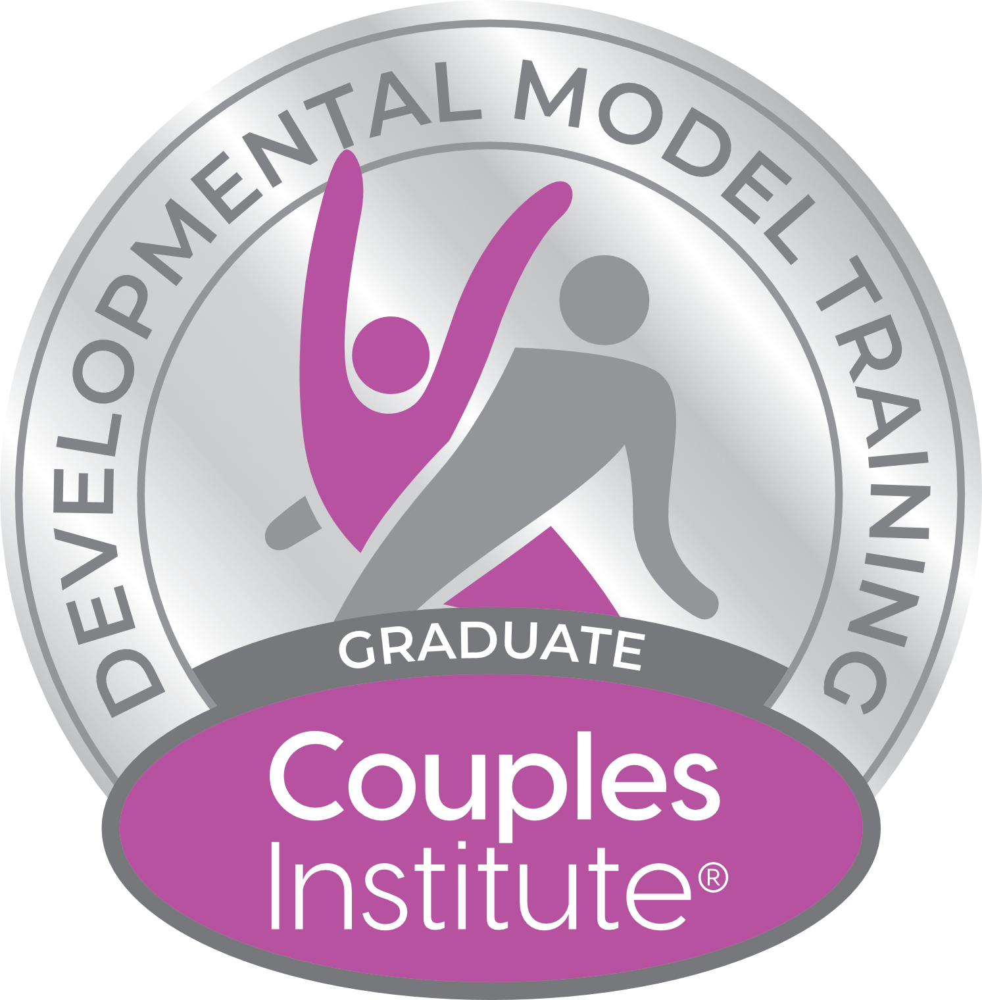
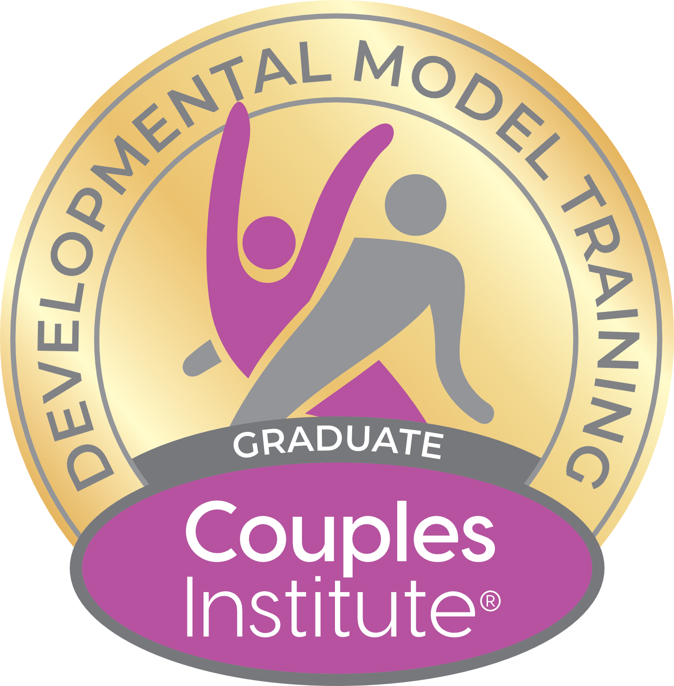
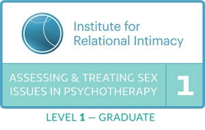

Understanding
Recognize the patterns beneath conflict and learn what each partner is reaching for.

About Deborah
For more than two decades, Deborah has helped individuals and couples cultivate stronger, more fulfilling relationships—with themselves and with their partners.
Experience & approach
Deborah’s compassionate approach, extensive knowledge, and practical skills have guided many couples toward deeper understanding, improved communication, and renewed connection.
Her expertise is continually refined through participation in the Advanced Training Program of the Developmental Model at The Couples Institute, founded by renowned relationship experts Ellyn Bader and Peter Pearson.
Deborah brings the same compassionate, practical approach to sex therapy, creating a welcoming space to explore concerns about desire, intimacy, and sexual connection. She helps partners talk openly about their needs, navigate differences with greater understanding, and develop a more fulfilling intimate relationship. Her work emphasizes comfort, consent, and connection, with respect for each person’s experiences and pace.
Deborah is married and has two teenage children.
Continued learning



Recognize the patterns beneath conflict and learn what each partner is reaching for.
Develop clearer, more constructive ways to speak, listen, and repair.
Create greater empathy, emotional intimacy, and a stronger sense of partnership.
Strong relationships are not free of challenges—they grow through the way partners learn to meet them together.Start a conversation